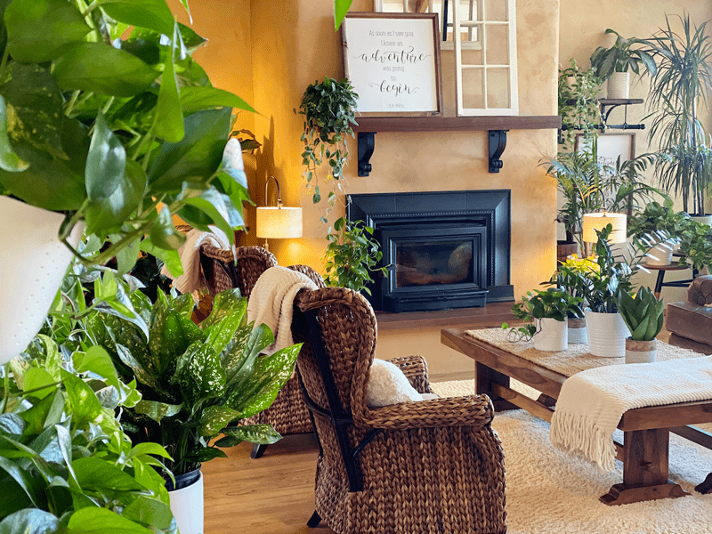
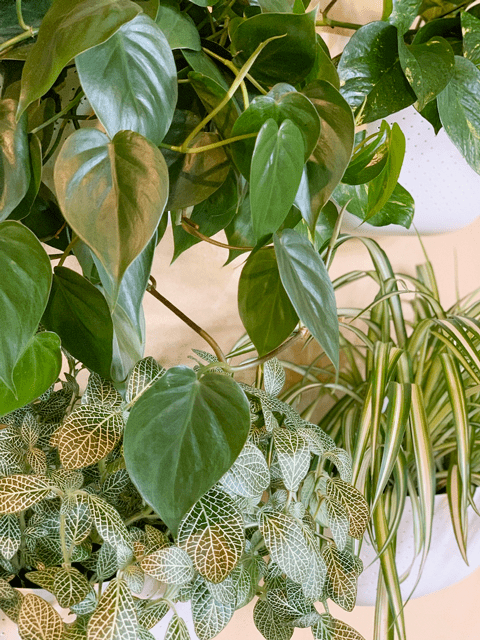
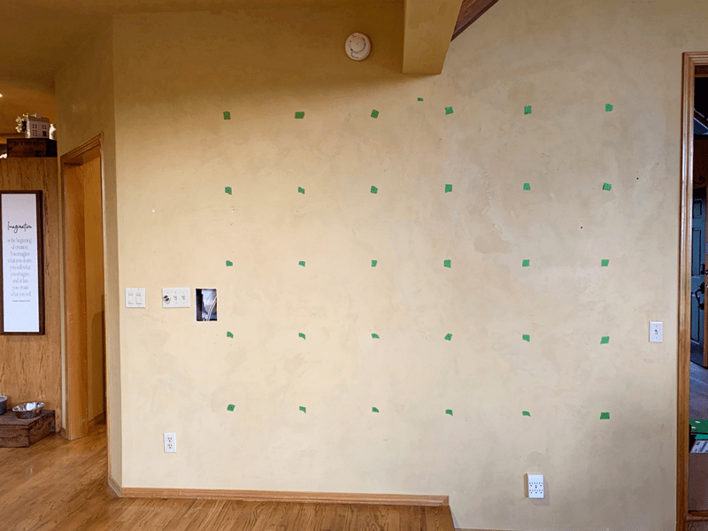
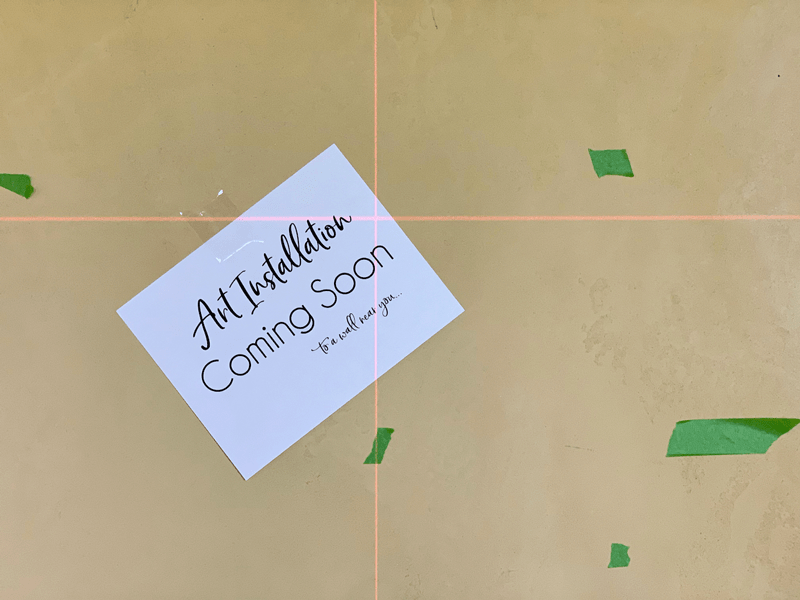
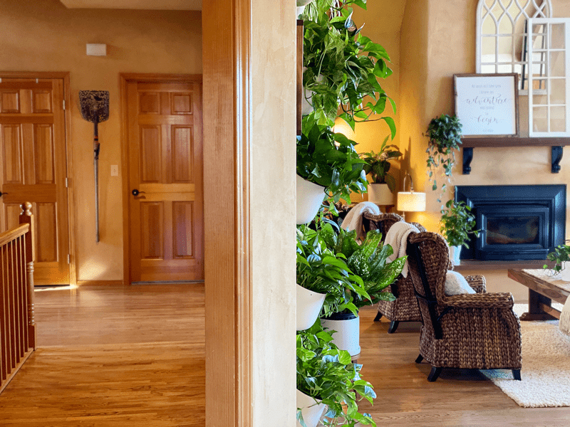
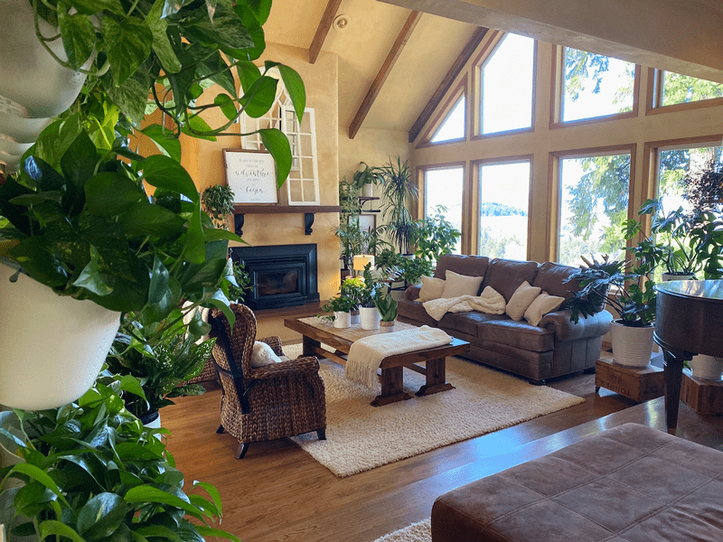
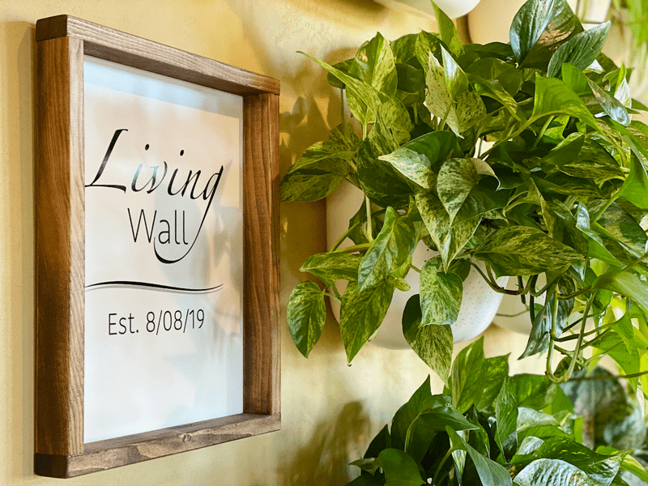
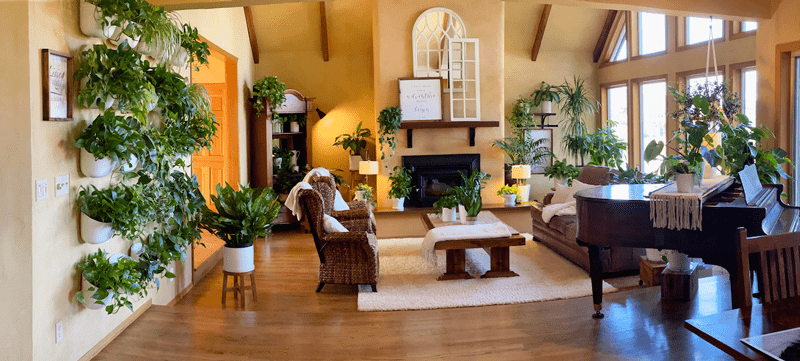

My Living Indoor Houseplant Wall
When it comes to creativity, I find that just about anything can become an “art medium.” For instance, the recipes I develop are edible pieces of art, flat pieces of fabric become three-dimensional objects, when I dabble with paint, I can literally transform a space–and now, I have houseplants to add to my artistic list. Hold on, Bob… I feel the creative bug biting!

Midsummer of 2019, I decided to create a Living Wall in our house. The idea just sprang from the depths of my core — how, where, and when flooded through my thoughts. The main issue was the fact that I didn’t have much wall space in our home due to the open floor plan and abundance of windows (not complaining). I love those features, but hanging things on the wall is challenging!
When wall space is limited, it becomes precious, and you want to use it wisely. I had one primary wall that provided enough space to hang anything of substance, but for years, tall furniture pieces covered this wall, which wasn’t very functional, but it balanced the space. It was time for a change! For the past year, Bob and I have been purging our house… every nook and cranny. It started with closets, cabinets, drawers, etc. but soon, we were addicted to lightening our load. We went from getting rid of junk drawers to large furniture pieces.

Which brings us back around to this one huge wall that was now empty. Yep, I sold the furniture that once took up real estate space here. I wanted access to that wall, and I wanted it to be art! One evening as I was sitting there, staring at it, I got to thinking about my other passion… healthy, whole-food, plant-based recipe development. Well, if our diet was plant-based, shouldn’t our house be? I giggled to myself, loving the idea the minute I conceived it.
I decided to fill the wall with living plants. I have to admit, I was a little nervous to tell Bob. I always run such things past him because, well, he lives here too! From the time it took for the concept to leave my lips to reach his ears, he instantly said, “Yes! go for it!” I don’t know why it surprised me that he was all for the idea; he is always supportive of my crazy ideas. But that simple “yes,” was all I needed to bring the concept to fruition.
I already had plants on flat surfaces (tables, counters, floors), and I already had many hanging from the ceiling. Now it was time to research the pots I would need to hang them on the wall. I am not sure how I landed on Wallygro.com, but boy, talk about a Godsend. Their pots are incredible.
They are the most straightforward, most effective vertical wall planter that I could find on the market. Each planter is made from 100% recycled eight milk jugs, right here in the USA. Now, this is a mission I can support and feel good about!
I sat down with Bob and asked him to help me with a layout. I had a pretty good idea of what I wanted, but two heads are always better than one. We decided on a 25-plant layout. I was excited and hesitant all at once. To pay for my art installation, I continued with our purging process through the house, selling stuff online, and before I knew it, I had the funds in hand to start my Living Wall adventure.

We measured and put a piece of green painter’s tape where each Wally Pot was going to go. See the hole in the wall? That is our in-wall vacuum system; we had to relocate it to the other side of the wall so the hose wouldn’t rub against the plants. Thankfully, that was a quick fix, so we didn’t have to rethink the whole idea. Looking at all the tape marks on the wall, my heart started to race a little… that’s a lot of holes to put in the wall. We were able to find studs for most but not for all. That meant we had to place anchors in the wall. No pain, no gain… right?!
To lessen the stress load, we used a laser guide to help keep things level. That little tool is a blessing to have around. We ended up placing each pot 16″ apart from its neighbor. For layout ideas, check their site (here). Since our wall had to sit empty with green polka dots all over it, I made a sign and hung it in the center of the wall. That way, when company came over, they would see that something big was coming. It built excitement for everyone.

After placing the order for the Wally Pots, I quickly realized that I needed to find 25 plants! I knew that I wasn’t going to be able to find that many plants locally, so Bob, Milo (the wonder dog), and I made our way to Portland to shop for plants. Before leaving the house, I spent time researching what plants I wanted; now, I just had to find them. It took a few shopping excursions, but we love adventures, so we had fun with it.
Every plant that I brought home got a thorough inspection, washing, and a neem oil treatment. The plants had their spa treatment; the potting soil was standing by, so now we just had to wait for the planters.
With the Wally Pots hung on the wall, all I needed to do was transplant 25 plants! I gathered all my supplies and set up two eight-foot folding tables outside near the hose where I did all the “dirty work.” Since the plants were already clean and ready to go, it took about three hours to transplant all of them. Then, all I had to do was hang the pots on their brackets, which were already in place! They pop on and off with such ease. Glorious! Glorious! Glorious!

The photo above: The top floor of our house is an open floor concept (living room, dining room, kitchen, and a grand opening to the sunroom). I took this photo while standing in the kitchen. There was a large wall that separates the entryway and the living room, which is where I hung the living wall. The living wall faces a north window. I took a photo below so you can see the lighting that I am working with.

My wall was living and full of life. My WallyGro vertical garden wall acts as a natural air filter, creating a cleaner, more invigorating home environment that leads to better overall health. The plants metabolize harmful toxins such as formaldehyde, carbon monoxide, VOC’s, and benzene while releasing energizing oxygen into the air. Not many pieces of art can do that!

I’ll be honest, this wall was an investment: pots, plants, and soil… but what work of art isn’t? Every day I am in awe of the wall. I sing to it, talk to it, and brush my hands along the foliage. I take care of it, and it takes care of me!

The Plants I Used for My Living Wall
- Marble Pothos
- Queen Pothos
- Jade Pothos
- Silver Leaf Pothos
- Arrowhead
- Spider Plants
- Nerve Plant
- Philodendron
Maintenance of the Living Wall
It is effortless to care for this wall. Taking care of these 25 plants is truly a breeze.
- With the environment of our house, the plants I potted, and the soil that I used, I only have to water these plants roughly every two weeks.
- I can water them while they are on the wall or take them off the wall. I usually take them off so that I can inspect the leaves and soil for pests. I also use this time to remove any dead debris.
- That’s it!
My Experience Tips
- The pots come with a bracket, screw, and anchor (if you don’t hit a stud). We ended up using longer screws than the ones provided, but we have clay on our walls, which probably made them thicker, thus requiring the longer screw.
- Try to hit a stud when hanging the pot. If you don’t, you must use the anchor. You don’t want the plant falling off the wall.
- When creating a Living Wall, remember that plant health comes first: make sure you select the right location with good indirect light, and free from cold and hot drafts.
- Select and group plants that have similar growing requirements; watering, lighting, etc.
- If you use vining plants, keep trimming the vines, so they bush out and fill in the wall. You will need a dose of patience for this.
- You can water the plants while they are on the wall, but I would encourage you to remove them when watering so you can use this time to inspect them for any health issues or pest invasions.
- If you find pests on one plant, immediately remove it. Treat it and quarantine it until the issue has been eradicated. When you build a Living Wall like this, the plants create “bridges” for the pests to travel (they all touch each other).
I know this was a bit lengthy, and I hope you enjoyed reading about how I built my Living Wall. Please be sure to leave a comment below. Blessings, amie sue

Funky panoramic photo
© AmieSue.com